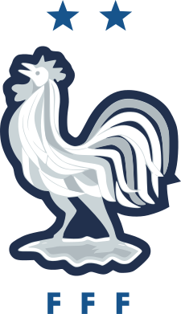
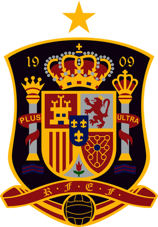

FIFA World Cup
The FIFA World Cup, often simply called the World Cup, is an international association football competition contested by the senior men's national teams of the members of the Fédération Internationale de Football Association (FIFA), the sport's global governing body. The championship has been awarded every four years since the inaugural tournament in 1930, except in 1942 and 1946 when it was not held because of the Second World War. The current champion is France, which won its second title at the 2018 tournament in Russia. The current format involves a qualification phase, which takes place over the preceding three years, to determine which teams qualify for the tournament phase. In the tournament phase, 32 teams, including the automatically qualifying host nation(s), compete for the title at venues within the host nation(s) over about a month. The 21 World Cup tournaments have been won by eight national teams. Brazil have won five times, and they are the only team to have played in every tournament. The other World Cup winners are Germany and Italy, with four titles each; Argentina, France, and inaugural winner Uruguay, with two titles each; and England and Spain, with one title each.
Go to the topBrazil

The Brazil national football team (Portuguese: Seleção Brasileira de Futebol) represents Brazil in men's international football and is administered by the Brazilian Football Confederation (CBF), the governing body for football in Brazil. They have been a member of FIFA since 1923 and a member of CONMEBOL since 1916. Brazil is the most successful national team in the FIFA World Cup, being crowned winner five times: 1958, 1962, 1970, 1994 and 2002. The Seleção also has the best overall performance in the World Cup competition, both in proportional and absolute terms, with a record of 73 victories in 109 matches played, 124 goal difference, 237 points, and 18 losses. Brazil is the only national team to have played in all World Cup editions without any absence nor need for playoffs.
Go to the top
Germany
The Germany national football team (German: Deutsche Fußballnationalmannschaft or Die Mannschaft) represents Germany in men's international football and played its first match in 1908. The team is governed by the German Football Association (Deutscher Fußball-Bund), founded in 1900.[9][10] Between 1949 and 1990, separate German national teams were recognised by FIFA due to Allied occupation and division: the DFB's team representing the Federal Republic of Germany (named West Germany from 1949 to 1990), the Saarland team representing the Saar Protectorate (1950–1956) and the East German team representing the German Democratic Republic (1952–1990). The latter two were absorbed along with their records;[11][12] the present team represents the reunified Federal Republic. The official name and code "Germany FR (FRG)" was shortened to "Germany (GER)" following reunification in 1990.
Go to the top
Argentina

The Argentina national football team (Spanish: Selección de fútbol de Argentina) represents Argentina in men's international football and is administered by the Argentine Football Association, the governing body for football in Argentina. Argentina's home stadium is Estadio Monumental Antonio Vespucio Liberti in Buenos Aires. La Selección (national team), also known as La Albiceleste, has appeared in five World Cup finals, including the first final in 1930, which they lost 4–2 to Uruguay. Argentina won in their next final appearance in 1978, beating the Netherlands at extra time, 3–1. Argentina won again in 1986, through a 3–2 victory over West Germany, and a tournament campaign inspired by their captain Diego Maradona. They made the World Cup finals once more in 1990, and lost 1–0 to West Germany following a controversial penalty call in the 87th minute. Argentina, led by Lionel Messi, made their fifth appearance in a World Cup final in 2014, again losing to Germany, 1–0 during extra-time. Argentina's World Cup winning managers are César Luis Menotti in 1978 and Carlos Bilardo in 1986.
Go to the top
Italy
The Italy national football team (Italian: Nazionale di calcio dell'Italia) has officially represented Italy in international football since their first match in 1910. The squad is under the global jurisdiction of FIFA and is governed in Europe by UEFA—the latter of which was co-founded by the Italian team's supervising body, the Italian Football Federation (FIGC). Italy's home matches are played at various stadiums throughout Italy, and their primary training ground, Centro Tecnico Federale di Coverciano, is located at the FIGC technical headquarters in Coverciano, Florence. Italy is one of the most successful national teams in the history of the World Cup, having won four titles (1934, 1938, 1982, 2006) and appearing in two other finals (1970, 1994), reaching a third place (1990) and a fourth place (1978).
Go to the top
France
The France national football team (French: Équipe de France de football) represents France in men's international football and is controlled by the French Football Federation, also known as FFF, or in French: Fédération française de football. The team's colours are blue, white, and red, and the coq gaulois its symbol. France are colloquially known as Les Bleus (The Blues). They are the reigning world champions, having won the most recent World Cup final in 2018. France plays their home matches at the Stade de France in Saint-Denis, Île-de-France, and their manager is Didier Deschamps. They have won two FIFA World Cups, two UEFA European Championships, two FIFA Confederations Cups and one Olympic tournament. France experienced much of its success in four major eras: in the 1950s, 1980s, late 1990s/early 2000s, and mid/late 2010s, respectively, which resulted in numerous major honours.
Go to the top
Uruguay
The Uruguay national football team (Spanish: Selección de fútbol de Uruguay) represents Uruguay in international football, and is controlled by the Uruguayan Football Association, the governing body for football in Uruguay. The current head coach is Óscar Tabárez. The Uruguayan team is commonly referred to as La Celeste (The Sky Blue). They have won Copa América 15 times, the most successful national team in the tournament, the most recent title being the 2011 edition. The team has won the FIFA World Cup twice, including the first World Cup in 1930 as hosts, defeating Argentina 4–2 in the final. They won their second title in 1950, upsetting host Brazil 2–1 in the final match, which received an attendance higher than any football match ever.
Go to the top
England
The England men's national football team represents England in men's international football since the first international match in 1872. It is controlled by The Football Association (FA), the governing body for football in England, which is affiliated with UEFA and comes under the global jurisdiction of world football's governing body FIFA. Also known as The Three Lions, England competes in the three major international tournaments contested by European nations; the FIFA World Cup, the UEFA European Championship, and the UEFA Nations League. England is one of eight nations to have won the World Cup.
Go to the top
Spain
The Spain national football team (Spanish: Selección Española de Fútbol) represents Spain in international men's football competitions since 1920. It is governed by the Royal Spanish Football Federation, the governing body for Football in Spain. Spain are one of the eight national teams to have been crowned world champions, having participated in a total of 15 of 21 FIFA World Cups and qualifying consistently since 1978. Spain has also won three continental titles, having appeared at 10 of 15 UEFA European Championships.
Go to the top